DPL-SLAM: Enhancing Dynamic Point-Line SLAM Through Dense Semantic Methods
Zhihao Lin , Qi Zhang , Zhen Tian, Peizhuo Yu, and Jianglin Lan
Abstract—The traditional visual simultaneous localization and mapping (SLAM) systems rely on the static-world assumption and cannot handle dynamic objects. This article presents a novel SLAM system, Semantic Point and Line Features SLAM (DPL-SLAM), that can handle dynamic environments and can be used for real-time operation. To handle dynamic objects, we apply object detection to identify 80 categories within the scene and implement unique handling of features both within and outside the detected bounding boxes using Lucas–Kanade (LK) optical flow and epipolar constraint. Within bounding boxes, we propose an efficient local elimination algorithm to address features that violate the epipolar constraint. We designate nearby and intra-box regions that deviate from the constraint as potential dynamic
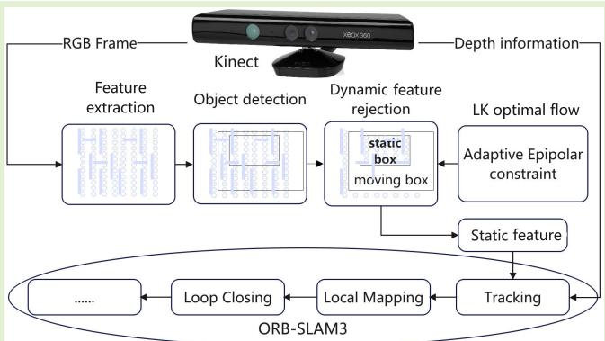
areas, and conditionally eliminate features within these areas to varying extents, thus minimizing incorrect elimination of stable data associations. Outside the bounding boxes, non-compliant features are regarded as outliers and directly eliminated, making the system robust to unknown objects. We have evaluated DPL-SLAM on the TUM RGB-D and KITTI STEREO datasets and compared it with state-of-the-art SLAM systems. The results show that DPL-SLAM outperforms most SLAM systems in various dynamic scenarios and exhibits excellent robustness and real-time performance, thus effectively handling dynamic noise interference under indoor RGB-D and outdoor stereo modes. Finally, we conduct experiments in a real-world environment to verify the algorithm’s effectiveness.
Index Terms— Deep learning, localization, simultaneous localization and mapping (SLAM), visual camera sensors.
I. INTRODUCTION
IMULTANEOUS localization and mapping (SLAM) is S crucial for robotic vision, facilitating camera pose estimation and mapping of unknown environments. Although advancements in point-based [1], [2], line-based [3], and direct SLAM [4] appear due to the camera being cheaper and lighter than other sensors [5], a key challenge persists: most visual SLAM systems inherently assume static environments. This contradicts the dynamic nature of real-world environments, which causes inaccuracies or instabilities in data associations, resulting in ineffective SLAM implementation.
Historically, overcoming this challenge has usually relied on extracting and leveraging reliable static features across varied environments. Traditional geometric methods, such as random sample consensus (RANSAC) [6], have been employed to discard mismatches in both static and dynamic scenes. However, these methods stumble when the entire view is occupied by dynamic objects.
Recent research addresses this issue by integrating traditional geometric methods with deep learning to handle dynamic objects. Based on object detection, systems like Crowd-SLAM [7] have demonstrated remarkable potential, even outperforming semantic segmentation-based methods when processing non-predefined moving objects. However, the direct removal of feature points within all bounding boxes may lead to insufficient data associations for pose estimation. Furthermore, semantic segmentation algorithms like SegNet [8] or Mask-RCNN [9] struggle to balance segmentation accuracy, system load, and the number of detected object classes. They normally fail to achieve real-time operation when high accuracy and extensive class detection are essential.
Moreover, the limitations of using only point features in dynamic visual SLAM environments must be acknowledged. Point features tend to fail in low-texture environments, such as corridors, and are particularly susceptible to changes in illumination. Additionally, the sparsity of point features hinders the task of visualizing the environment via a 3-D map, presenting yet another challenge. On the other hand, visual SLAM systems based on deep learning methods typically assume that only the semantic classes detected in the scene are capable of movement. They do not fully consider the wide range of scenes encountered in real life. When objects that the object detection algorithm fails to successfully identify move within the scene, the system will fail.
In this article, we present DPL-SLAM, an innovative real-time semantic SLAM solution to address the fundamental challenges posed by existing methods. By fusing ORB-SLAM3, a state-of-the-art SLAM system, with the Line Segment Detector algorithm [10], our proposed method accomplishes enhanced pose estimation. DPL-SLAM extracts abundant line segment features to achieve comprehensive structural-semantic representation, effectively capturing extensive edge information within scenes. Additionally, our method encompasses invariance to illumination and rotation, thereby enhancing the expressiveness of the extracted lines. To address the issues related to dynamic objects, we have integrated a dynamic point removal algorithm into the front end of the SLAM system. We employ CUDA-optimized YOLOv5 [11], a cutting-edge single-stage object detector, to extract semantic information of 80 different object categories in the environment. This real-time detection process ensures accurate and efficient recognition of various objects. We propose an algorithm utilizing the Lucas–Kanade (LK) optical flow [12] to determine the motion status of detected classes and variably eliminate points within each bounding box based on the detected ratio of abnormal features while preserving the key points related to static objects. Moreover, abnormal features outside the boxes are directly removed.
Owing to our ingenious integration of the epipolar constraint from the optical flow with dense semantic information, we can effectively eliminate the dynamic features of semantic objects and handle features on unknown moving objects. Meanwhile, we preserve the features of static unknown objects and semantic objects (such as vehicles parked along the road) to compute the camera’s pose. We consider all semantic classes as potential motion classes. In other words, even if an object is preclassified as a potential dynamic category, as long as the object remains stationary, it should satisfy the consistency of optical flow and epipolar constraints, and we will retain the features on the object to restore the camera pose.
As illustrated by the example in Fig. 1, points of both the detected and undetected dynamic cars within the frame are eliminated, while those of the static car remain unchanged.
The contributions of this work are summarized as follows.
1) We introduce DPL-SLAM, a real-time, dynamic semantic SLAM system suitable for indoor and outdoor environments. Real-world experiments show the system’s capacity for sparse point-and-line reconstruction of static backgrounds, and the experiments on the TUM and KITTI datasets show our good localization performance in various dynamic environments.
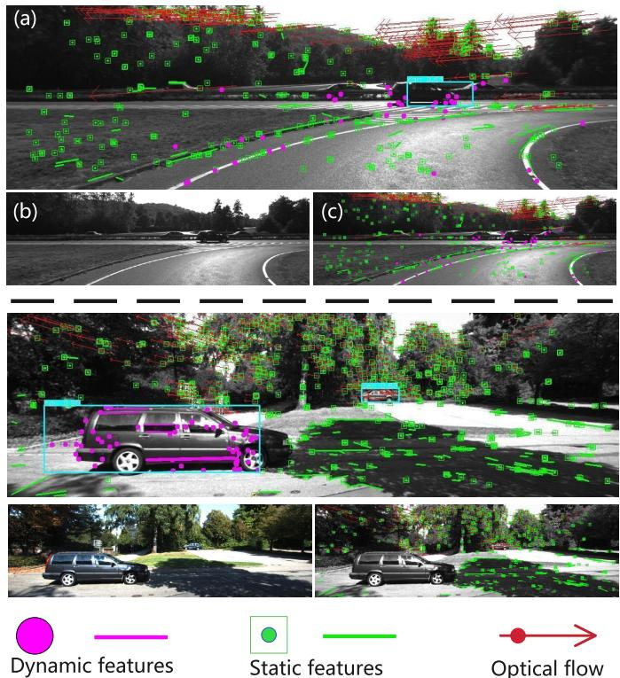
Fig. 1. General depiction of dynamic point detection in our system. The image (a) represents the intermediate processing result after applying our dynamic point detection algorithm, (b) represents an RGB image from the KITTI outdoor dataset [33], and (c) represents the final output of our system. In the first row (images a, b, c), points corresponding to cars outside the bounding boxes or undetected are classified as dynamic. In the second row, points associated with a static car using semantic prior are also identified as static.
2) Building upon ORB-SLAM3, we propose a visual SLAM framework that features a versatile deployment capacity across different camera platforms without the dependence on predefined label and texture information, thus providing considerable flexibility. It fully leverages the structural, textural, and semantic information present in the scene to eliminate dynamic noise interference and enhance the system’s localization accuracy.
3) Our proposed novel dynamic point and line culling algorithm effectively harnesses dense detected semantic classes and geometric optical flow. It does not rely on a single piece of information and exhibits a strong capability in managing both known and unknown dynamic objects, thus maintaining robust performance across various environments.
II. RELATED WORK
A. Advancements in Dynamic vSLAM
via Geometric Methods
Dynamic visual SLAM has seen enhancements through a range of geometric techniques. Sun et al. [13] brought forward an RGB-D-based online motion removal technique, utilizing optical flow for tracking while continuously updating the foreground model. Cheng et al. [14] merged the LK sparse optical flow with a fundamental matrix to filter out dynamic features, further consolidating the effectiveness of optical flow in dynamic object management.

Fig. 2. Workflow of our DPL-SLAM system. The dynamic object clearing system works in four stages. It begins by extracting point-line features from input images. Then, it identifies potential dynamic regions through object detection and epipolar constraint validation. Next, depending on the proportion of dynamic features within each box, it selectively removes features. Lastly, it updates the remaining stable features for camera pose recovery in the backend processing. This system effectively manages dynamic object exclusion in SLAM operations.
Other innovative contributions include the use of point correlations in [15] for differentiating static and dynamic map points, and the method in [16] for identifying dynamic components through long-term consistency using conditional random fields. However, these techniques grapple with issues related to slow or obstructed objects and are usually confined to certain camera types. Generally, the above geometric visual SLAM approaches have lower robustness in dynamic scenes than semantic-based methods.
Some work has utilized inertial measurement units (IMUs) to enhance the handling of dynamic objects. Kim et al. [17] used IMU to compensate for the rotation of image frames and defined the feature transformation between two frames as the corresponding motion vector. Yin et al. [18] proposed the Dynam-SLAM, which detects dynamic features based on visual scene flow and IMU. These methods lack semantic understanding of the scene and are unable to handle complex motion patterns effectively.
B. Dynamic vSLAM Enhancement
by Semantic Techniques
Applying semantic segmentation or object detection can provide visual SLAM systems with prior motion information. An example is DS-SLAM [19], which integrates SegNet [8] with LK optical flow to detect moving humans. Fan et al. [20] use BlitzNet [21] along with the epipolar constraint to exclude outliers effectively in the dynamic mask areas of several movable classes.
Other techniques like using DeepLab v3+ in [22] for dynamic object segmentation and subsequent filtering through multiview geometry have been implemented. Liu and Miura [23] propose to use moving probabilities to update and disseminate semantic information. Gao et al. [24] use lighter object detection and multiview geometry to cull dynamic features. However, these methods have their limitations, including the ability to segment only 20 object classes and adaptability to different camera types.
Recent research has expanded to treat all classes in the scene as potential dynamic areas and to increase the stability of dynamic detection. For example, Zhang and Li [25] achieved consistency in motion detection for each bounding box using a threshold algorithm and ambiguity constraints. He et al. [26] employed the average reprojection error across multiple frames to recover static points and refined the segmentation of moving objects with depth maps to reduce the uncertainty. Min et al. [27] proposed a method for dealing with motion blur and reallocating feature points to identify static and dynamic features accurately. However, they encountered difficulties in handling unknown objects.
In parallel, Yuan et al. [28] utilize line structures to decipher environmental structures, but their approach is constrained by the camera and environment types. Wang et al. [29] propose the DRG-SLAM, which combines line and planar features. However, like previous methods, it only works with RGB-D cameras in indoor settings. These recent studies prioritized geometric methods over optical flow, resulting in decreased accuracy, thus raising the need to develop a more effective approach.
III. SYSTEM OVERVIEW
As depicted in Fig. 2, our DPL-SLAM system improves pose estimation through the intelligent integration of point and line features. It applies semantic and geometric filters to dynamic points and lines in RGB images, with a learning-based approach for initial bounding box detection, and the Optical Flow method managing dynamic elements. Our unique algorithm forms the system’s core, intelligently and variably identifying and eliminating moving points and lines. The system integrates the point features of ORB-SLAM3 with two new functions: the line features of PL-SLAM [30] and the dynamic feature removal of DS-SLAM [19]. Details of how to integrate them are provided in the following two sections.
A. Line Features-Based SLAM
Unlike traditional point-based SLAM methods, our proposed system incorporates line features, which effectively mitigates the interference caused by dynamic noise and thus greatly enhances the system robustness in dynamic scenes. Moreover, the inclusion of line features allows for effective dynamic object handling in the generated map, as the map lines of dynamic objects tend to disappear over time.
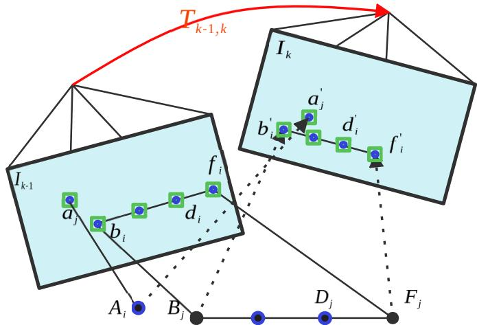
Fig. 3. Illustration of the line feature matching process in two frames. We first compare the line segment descriptors between and the candidate line segment descriptors in according to the grid ID, then select the closest match. A definitive match is established based on the matched lines’ cosine angle similarity and the degree of overlap.
1) Line Features Matching: Our system employs a comprehensive line feature-matching methodology for stereo camera configurations. The initial step involves identifying line features from the left and right images from the stereo camera that share the same grid ID at the start and endpoints. The line descriptor from the left image is subsequently compared with that of the right image’s candidate line segment, and the descriptor with the minimal distance is chosen for matching. The process concludes by validating the overlap threshold and examining the differences in cosine angles of the direction vectors between matched lines, as depicted in Fig. 3. In the figure, represents the relative pose transformation between frames or the left and right image frames. A line segment in 3-D space, defined by a start point and an endpoint , results in two points: the start point and the endpoint when projected onto the image coordinate system at time t − 1. At the time t, the same line segment projected onto image coordinate system results in new points: start point and endpoint . This rigorous procedure ensures reliable and accurate matching of line features in stereo images, thereby enhancing our system’s overall performance and robustness.
2) Line Feature Attributes Updating Algorithm: To eliminate redundant line features and maintain stable tracking, we initialize the depth values of line endpoints, the representation of line segments as 3-D vectors, and the disparity. These attributes are crucial for constructing the key line features for reference tracking in the map and optimizing the single-frame camera pose in the SLAM system, as well as for local map optimization, updating the co-visibility graph and essential graph.
For matching segment pairs satisfying the preliminary filter criteria, we perform bidirectional cosine similarity matching for line-matching pairs with the same start and endpoint IDs.
Line segments with low similarity are omitted. For matching line segments from the left and right images of the stereo camera, we form homogeneous coordinate vectors for the start and endpoints of each line segment. These vectors aid in optimizing the pose during bundle adjustment. We estimate the degree of overlap between left and right line segments, with line segments exhibiting an overlap greater than 0.75 deemed stable. Furthermore, we apply a disparity threshold to filter matched line segments, discarding those with small disparities. The depth value D is estimated as , where K is the ratio of the left and right images’ focal length, and is the disparity value. In the RGB mode, is directly obtained from the depth image.
3) Line Features Optimizing Algorithm: In 3-D visual SLAM systems, map line features play a critical role in environment modeling and localization. However, factors like sensor noise and dynamic environments can induce errors in the orientation and position of these features. To address this, we adopt an optimization-based reference keyframe pose correction method to enhance the accuracy and consistency of map line features.
Our approach comprises two main steps: reference keyframe selection and pose correction. We carefully select a suitable reference keyframe as a benchmark considering a broad viewing angle range and minimal reprojection error. For each map line feature, we perform pose correction based on its corresponding reference keyframe. If the reference keyframe matches the current one, we use its corrected reference keyframe for pose correction; otherwise, we use its original reference keyframe.
The process of pose correction is detailed as follows. Let and represent the rotation matrix and the translation vector from the reference keyframe to the world coordinate system, respectively. We assume the world coordinates of the map line features to be corrected as , with and denoting the start and end coordinates of the line features, respectively. By using the Sim3 transformation matrices and corSwr, we transform the pose of map line features from the reference keyframe of the current frame to the corrected reference keyframe, as shown in the following equations:
where × denotes matrix multiplication, and and CorP represent the start and end coordinates of the corrected map line feature in the corrected reference keyframe coordinate system.
By applying this correction process, we achieve precise coordinate transformation and enhanced camera pose accuracy. Our method effectively mitigates positioning errors and dynamic environment interference, improving the accuracy and consistency of map line features and providing more reliable 3-D visual SLAM results.
B. Dynamic Features Removing
We employ several strategies to mitigate the interference of dynamic object feature point pairs on the pose estimation of the SLAM system. First, we utilize object detection to identify dynamic objects in the scene. Second, we apply the LK algorithm to enforce epipolar constraints based on the fundamental matrix. This step ensures that the feature point pairs adhere to the geometric constraints imposed by the camera motion. Lastly, we incorporate a dynamic feature point removal mechanism based on the proportion of dynamic feature points within the bounding box of the detected dynamic object. By setting a threshold for the proportion, we can effectively filter out dynamic feature points that may introduce erroneous estimations into the SLAM system. These approaches collectively contribute to the system’s robustness in handling dynamic object interference. More details of the dynamic feature detection and culling strategies are provided below.
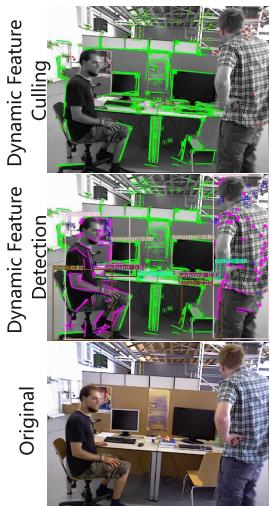
(a)
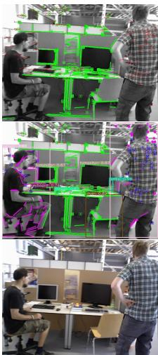
(b)
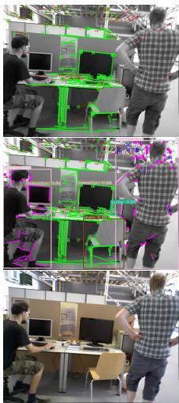
(c)
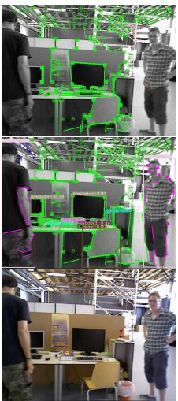
(d)
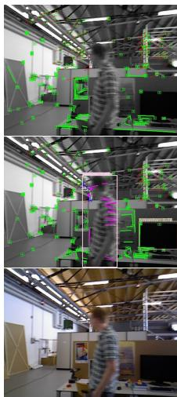
(e)
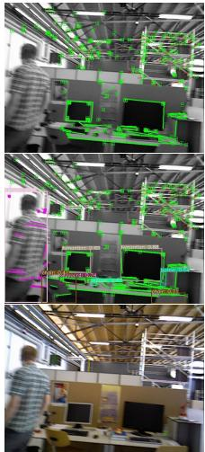
(f)
Fig. 4. Examples of moving object detection are illustrated. (a)–(f) Examples of sequential temporal relationships within the image sequences of the TUM indoor dataset [32]. The first row presents the original RGB image. The second row demonstrates the outcomes of the proposed semantic module and geometric constraint detection. The third row displays the selective feature removal results, guided by the proportion of anomalous features detected from the previous stage. Anomalous features are highlighted in pink, and blue signifies potential dynamic features, which, if exceeding a certain proportion, are designated for removal. Static features are marked in green.
1) Dynamic Feature Detection: Our research presents a robust approach for detecting dynamic points and lines within an input image. This novel method improves upon the motion consistency checking approach in DS-SLAM [19] by enhancing the Harris corner matching via the LK optical flow pyramid [12].
Different from the traditional Harris corners [31], we discard the matches near the pixel edge or those whose central pixel blocks display high disparity are excluded, thereby refining the pool of candidate points.
Subsequently, we calculate the distance between a remaining point and its corresponding epipolar line. The points exceeding a predefined distance threshold are classified as outliers. This process is also applied to line features, with rigorous, threshold-based removal of irrelevant points being a cornerstone of our algorithm’s precision.
Following this, our method incorporates a RANSAC algorithm [6] to identify the fundamental matrix yielding the maximum inliers. This matrix forms the basis for computing the polar line of the current frame and mapping the points in the preceding frame to their corresponding search domains (epipolar lines) in the current frame.
Let the matched points in the preceding and current frames be and , respectively, and their homogeneous coordinate forms be and . Then, we have the following:
where u, v are the image coordinate values. The corresponding epipolar line is then calculated as
where X, Y, Z represent the line vector, and F is the fundamental matrix. We then compute the distance between the matched point and its corresponding epipolar line as follows:
where D represents the distance. If D exceeds a preset threshold, the feature point is considered an outlier.
2) Dynamic Feature Culling: Following the detection of dynamic features, we further process the features within the object boxes by integrating semantic information. To maximize the retaining of key data while minimizing erroneous key feature matches, we propose a local feature filtering algorithm. The key features within a 15-pixel radius centered on a dynamic feature are completely removed. If an object box has dynamic features that account for more than 40% of all features in the frame, all features in that box are not passed to the backend.
Examples of moving object detection are shown in Fig. 4. In the “Dynamic Feature Detection” row, pink features represent dynamic features detected by the epipolar geometry method. Blue dots stand for candidate dynamic features within the dynamic box that satisfy the epipolar constraint, but their removal depends on the proportion of pink features in the box. In Fig. 4(a), our system adeptly captures dynamic points on a person’s right hand and dynamic line features on the legs. In the “Dynamic Feature Culling” row of Fig. 4(a), the remaining green features are passed to the backend as static key features for stable data association. As can be observed, our local culling algorithm did not fully remove the lines on the person’s body, leaving static features on the lower half for pose estimation. Red arrows display the direction of optical flow, showing that our method can effectively eliminate key features not aligning with the overall optical flow direction, thereby facilitating accurate pose estimation.
For features outside the semantic boxes, we directly remove the dynamic points detected in the image background to eliminate unstable data associations, which enhances our ability in the unknown objects. The overall algorithm is illustrated in Algorithm 1.
Algorithm 1 Dynamic Points Culling Algorithm
Input: Bounding boxes , key points for the current
frame dynamic key points for the current frame
Output: Static key points judged as static for the current
frame
1:
2: for each bounding box in do
3: boo count
4: for each dynamic key point in do
5: if in then
6: count ← count + 1.
7: end if
8: end for
9: if count then
10:
11: else
12: for each key point in do
13: if and and
then
14:
15: end if
16: end for
17: end if
18: end for
IV. EXPERIMENTS AND RESULTS
The experiments are conducted on a Linux machine with the Ubuntu 18.04.6 LTS OS, a 12th generation 16-thread Intel Core i5-12600KF CPU, an NVIDIA GeForce RTX 3070Ti GPU, and 16 GB of RAM. For object detection, we utilize the YOLOv5-s model to have an optimal balance between accuracy and real-time performance. We evaluate the efficacy of our DPL-SLAM system on the TUM RGB-D indoor dataset [32] and the KITTI binocular outdoor dataset [33] and investigate its robustness across different camera setups. Finally, we test the proposed method in the real world using the ground-truth trajectories captured by our system in the same but static environment with the same movement pattern.
The TUM and KITTI datasets are described below.
1) Sensors: In the experiments for the TUM dataset, the Kinect RGB-D camera is used to capture the scene.
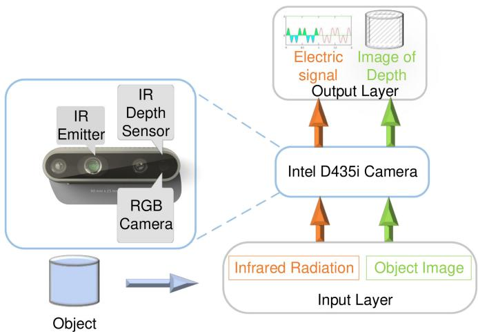
Fig. 5. Intel D435i RGB-D camera utilizes the structured light triangulation method for depth sensing.
It consists of three components: RGB camera, depth sensing, and microphone array. Depth sensing is achieved with 30 frames/s by an infrared (IR) emitter and an IR depth sensor.
Specifically, as shown in Fig. 5, the device projects structured light with predefined patterns by the IR emitter, and the depth sensor gets the pattern of the reflected light, which is altered by the interference of the irradiated object. Then, the depth sensor uses trigonometry to calculate the vertical distance between the IR emitter-depth sensor line to the pixel, namely the pixel’s depth.
The experiments in the KITTI dataset use two Point Gray Flea 2 (FL2-14S3C-C) cameras. Its frame rate is 10 Hz.
2) TUM dataset: The TUM RGB-D dataset comprises image sequences from dynamic indoor settings, containing various line densities and scene dynamics conducive for SLAM analysis. We selected four walking and two sitting sequences to demonstrate high and low dynamics, respectively. The walking sequences (w/half, w/rpy, w/static, w/x yz) capture two individuals in motion, including chair movement, while the sitting sequences (s/half, s/x yz) document two individuals in conversation with minimal movements. The appended terms “half,” “rpy,” “static,” and “x yz” specify different camera movements.
3) KITTI dataset: The KITTI dataset consists of images in natural and urban outdoor settings. The KITTI dataset is a collection of images captured in varied natural and urban outdoor environments. Our research specifically zeroes in on sequences 00–10, all of which supply us with verified ground truth data. The sequences we have chosen for analysis are characterized by their unique mix of traffic density and the prevalence of man-made structures. By conducting a comprehensive examination of these sequences, we can gauge the effectiveness and robustness of our DPL-SLAM system across an array of different driving environments.
TABLE I
COMPARISON BETWEEN OUR DPL-SLAM AND THE EXISTING SLAM SYSTEMS BASED ON ORB-SLAM3
| Sequence | ATE/m | t.RPE/m | ||||||
| 03 | RDS | DeepLab | Ours | 03 | RDS | DeepLab | Ours | |
| RMSE (S.D.) | RMSE (S.D.) | RMSE (S.D.) | RMSE (S.D.) | RMSE (S.D.) | RMSE (S.D.) | RMSE (S.D.) | RMSE (S.D.) | |
| w/half | 0.231 (0.008) | 0.025 (0.017) | 0.027 (0.012) | 0.018 (0.009) | 0.024 (0.016) | 0.027 (0.014) | 0.023 (0.010) | 0.014 (0.008) |
| w/rpy | 0.160 (0.073) | 0.146 (0.105) | 0.031 (0.018) | 0.034 (0.019) | 0.030 (0.021) | 0.024 (0.012) | 0.040 (0.023) | 0.022 (0.014) |
| w/static | 0.024 (0.012) | 0.081 (0.022) | 0.006 (0.002) | 0.005 (0.002) | 0.019 (0.016) | 0.022 (0.014) | 0.008 (0.003) | 0.005 (0.003) |
| w/xyz | 0.275 (0.145) | 0.021 (0.012) | 0.013 (0.006) | 0.012 (0.006) | 0.027 (0.020) | 0.026 (0.016) | 0.017 (0.009) | 0.010 (0.006) |
| s/half | 0.021 (0.015) | 0.016 (0.007) | 0.008 (0.005) | 0.011 (0.006) | ||||
| s/xyz | 0.012 (0.006) | 0.011 (0.005) | 0.009 (0.006) | 0.008 (0.004) | ||||
The best results of RMSE and S.D. are highlighted in bold. For the existing SLAM systems, we utilize their original figures when available
TABLE II
COMPARISON BETWEEN OUR DPL-SLAM AND THE LATEST SLAM SYSTEMS
| Sequence | ATE/m | t.RPE/m | ||||||
| SD | LC-CRF | Blitz | Ours | SD | LC-CRF | Blitz | Ours | |
| RMSE (S.D.) | RMSE (S.D.) | RMSE (S.D.) | RMSE (S.D.) | RMSE (S.D.) | RMSE (S.D.) | RMSE (S.D.) | RMSE (S.D.) | |
| w/half | 0.019 (0.010) | 0.028 (0.015) | 0.025 (0.012) | 0.018 (0.009) | 0.018 (0.009) | 0.035 (0.024) | 0.025 (0.012) | 0.014 (0.008) |
| w/rpy | 0.053 (0.031) | 0.046 (0.034) | 0.035 (0.022) | 0.034 (0.019) | 0.035 (0.024) | 0.050 (0.046) | 0.047 (0.028) | 0.022 (0.014) |
| w/static | 0.005 (0.002) | 0.011 (0.008) | 0.010 (0.005) | 0.005 (0.002) | 0.006 (0.003) | 0.014 (0.011) | 0.012 (0.006) | 0.005 (0.003) |
| w/xyz | 0.013 (0.008) | 0.016 (0.011) | 0.015 (0.007) | 0.012 (0.006) | 0.017 (0.011) | 0.021 (0.015) | 0.019 (0.009) | 0.010 (0.006) |
| s/half | 0.013 (0.005) | 0.016 (0.007) | 0.016 (0.007) | 0.012 (0.006) | 0.016 (0.007) | 0.012 (0.006) | ||
| s/xyz | 0.011 (0.005) | 0.009 (0.005) | 0.014 (0.006) | 0.011 (0.005) | 0.012 (0.005) | 0.012 (0.007) | 0.014 (0.007) | 0.009 (0.005) |
The best results of RMSE and S.D. are highlighted in bold. For the existing SLAM systems, we utilize their original figures when available.
To analyze the experimental results, we consider the metrics of absolute trajectory error (ATE) and relative pose error (RPE). The ATE reflects the overall consistency of the estimated trajectory, while RPE provides an estimation of the local accuracy within a fixed time span 1, incorporating both trajectory and rotation aspects. Let represent the estimated pose sequence and SE(3) represent the ground-truth pose sequence. The ATE at time step t, denoted as is calculated as follows:
where S denotes the rigid body transformation that scales the estimated trajectory to match the ground-truth scale. The RPE at time step t, denoted as , is calculated as follows:
A. Experiments in Indoor Environments
We compare our proposed DPL-SLAM system with four sets of state-of-the-art dynamic SLAM systems. The global robustness and stability of each system are measured by the root-mean-square error (RMSE) and standard deviation (S.D.) of ATE in each set. The local performance is evaluated using the RMSE and S.D. of the translational RPE (t.RPE) in the first three sets and of the rotational RPE (r.RPE) in the last set.
The first set of benchmarks include two dynamic SLAM systems based on ORB-SLAM3 (O3) [1], the RDS-SLAM [23] (referred to as RDS), and the method proposed in [22] (referred to as DeepLab).
As shown in Table I, our method achieves the best performance in most of the sequences, except for the w/rpy sequence, in terms of ATE. Despite DeepLab’s superior performance in the w/rpy sequence, its t.RPE is inferior to ours in all sequences. Furthermore, our method has a significant advantage over ORB-SLAM3 in ATE. Fig. 6 demonstrates that the trajectory estimated by our system is more accurate than those by ORB-SLAM3 and ORB-SLAM3 added with line features.
The second set of benchmarks are the Blitz-SLAM [20] (referred to as Blitz), the SLAM system proposed in [25] (referred to as SD), and the system proposed by Du et al. [16] (referred to as LC-CRF). Like our work, SD adopts the same dense object detection strategy based on ORB-SLAM3. Blitz-SLAM uses the same geometric method but employs semantic segmentation instead of object detection. LC-CRF SLAM is a state-of-the-art pure geometric method. The results in Table II show that our DPL-SLAM achieves better results than other SLAM systems. The results also demonstrate the robustness of our system in high dynamic scenes, although it is slightly disadvantageous over LC-CRF and SD in the low dynamic sequence.
The third set of benchmarks are OVD-SLAM [26] (referred to as OVD), RTD-SLAM [24] (referred to as RTD), and COEB-SLAM [27] systems (referred to as COEB). Like our work, OVD-SLAM and COEB-SLAM have utilized semantic and optical flow information. RTD-SLAM is a recent advanced work that combines object detection with multiview geometric approaches. The results in Table III indicate that overall, despite a slight gap between our system and OVD-SLAM in the low dynamic sequence s/x yz, our DPL-SLAM has achieved better performance compared to other SLAM systems. This demonstrates the effectiveness of our method and its advantages over the others. The last set of benchmarks include the existing SLAM systems that incorporate additional geometric information based on point-line-plane features. O3L refers to an ORB-SLAM3 system that only adds line features without handling dynamic objects. Planar represents an advanced system that integrates point-line-plane features [34], while DRG stands for the most advanced point-line-plane feature integration system in dynamic environments [29].
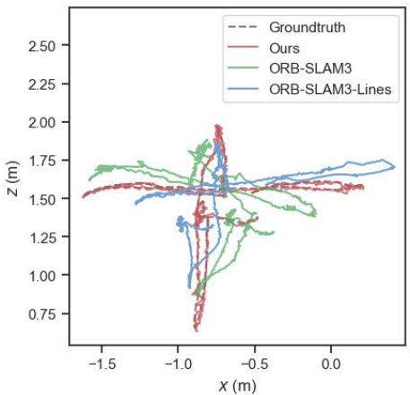
(a)
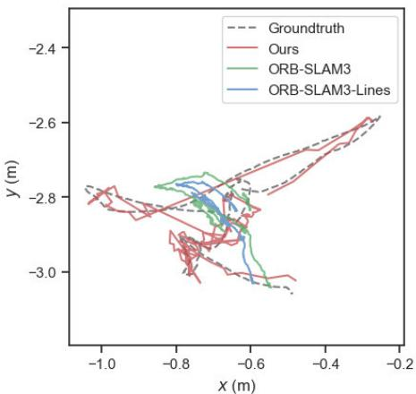
(b)
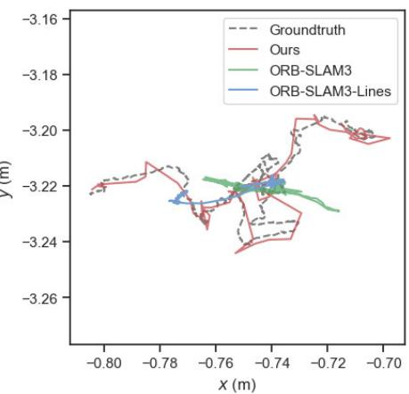
(c)
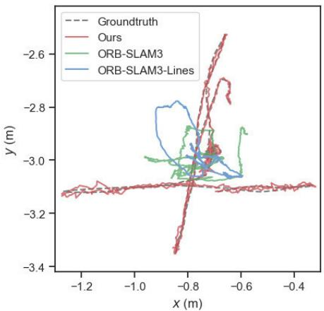
(d)
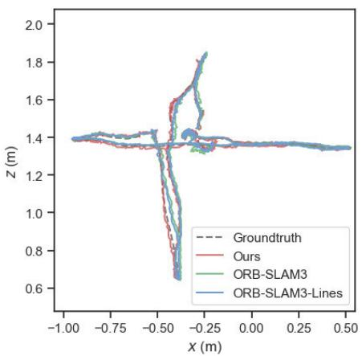
(e)
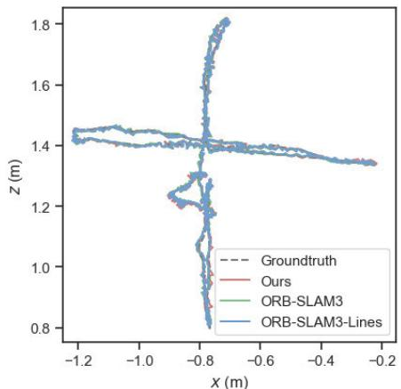
(f)
Fig. 6. Contrast of trajectories obtained from ORB-SLAM3, ORB-SLAM3 plus lines features and our system against the real ground-truth trajectory. (a) walking/half. (b) walking/rpy. (c) walking/static. (d) walking/xyz. (e) sitting/half. (f) sitting/xyz.
TABLE III
COMPARISON BETWEEN OUR DPL-SLAM AND THE LATEST SLAM SYSTEMS
| Sequence | ATE/m | t.RPE/m | ||||||
| OVD | RTD | COEB | Ours | OVD | RTD | COEB | Ours | |
| RMSE (S.D.) | RMSE (S.D.) | RMSE (S.D.) | RMSE (S.D.) | RMSE (S.D.) | RMSE (S.D.) | RMSE (S.D.) | RMSE (S.D.) | |
| w/half | 0.023 (0.011) | 0.028 (0.024) | 0.028 (0.014) | 0.018 (0.009) | 0.024 ( | 0.035 (0.024) | 0.032 (0.017) | 0.014 (0.008) |
| w/rpy | 0.035 (0.021) | 0.167 (0.030) | 0.033 (0.020) | 0.034 (0.019) | 0.050 ( | 0.019 (0.013) | 0.046 (0.027) | 0.022 (0.014) |
| w/static | 0.007 (0.003) | 0.121 (0.002) | 0.007 (0.003) | 0.005 (0.002) | 0.008( | 0.019 (0.013) | 0.009 (0.003) | 0.005 (0.003) |
| w/xyz | 0.014 (0.007) | 0.020 (0.009) | 0.016 (0.008) | 0.012 (0.006) | 0.018 ( | 0.012 (0.007) | 0.021 (0.011) | 0.010 (0.006) |
| s/half | 0.017 (0.007) | 0.016 (0.007) | 0.012 ( | 0.012 (0.006) | ||||
| s/xyz | 0.009 (0.005) | 0.011 (0.005) | 0.021 ( | 0.009 (0.005) | ||||
The best results of RMSE and S.D. are highlighted in bold. For the existing SLAM systems, we utilize their original figures when available.
TABLE IV
COMPARISON BETWEEN OUR DPL-SLAM AND THE EXISTING SLAM SYSTEMS USING PLANES OR LINES AS FEATURES
| Sequence | ATE/m | r.RPE/rad | ||||||||||
| O3L | Planar RMSE (S.D.) | DRG RMSE (S.D.) | Ours RMSE (S.D.) | O3L | Planar | DRG RMSE (S.D.) | Ours | |||||
| w/half | RMSE (S.D.) 0.209 (0.095) | RMSE (S.D.) | RMSE (S.D.) | RMSE (S.D.) | ||||||||
| 0.325 | 0.025 | 0.018 (0.009) | 0.010 (0.007) | 0.051( | 0.010 | 0.007 (0.004) | ||||||
| w/rpy | 0.158 (0.077) | 0.553 ( | 0.385 ( | 0.034 (0.019) | 0.010 (0.006) | 0.051 ( | 0.042 | 0.010 (0.006) | ||||
| w/static | 0.020 (0.011) | 0.293 ( | 0.007 ( | 0.005 (0.002) | 0.004 (0.003) | 0.023 ( | 0.004 | 0.003 (0.001) | ||||
| w/xyz s/half | 0.276 (0.119) | 0.276 | 0.018 ( | 0.012 (0.006) | 0.009 (0.006) | 0.036 ( 0.009 | 0.009 0.008 | 0.007 (0.005) | ||||
| s/xyz | 0.021 (0.011) | 0.020 | 0.014 ( 0.008 | 0.016 (0.007) 0.011 (0.005) | 0.006 (0.004) 0.006 (0.003) | 0.009 | 0.007 | 0.007 (0.003) 0.006 (0.003) | ||||
| 0.009 (0.005) | 0.024 | |||||||||||
The best results of RMSE and S.D. are highlighted in bold. For the existing SLAM systems, we utilize their original figures when available.
According to the results in Table IV, our system does not perform well in the s/half and s/xyz sequences due to a lack of surface geometric information, but it achieves state-of-the-art performance in other sequences, especially in high dynamic sequences, where our performance has a significant advantage.
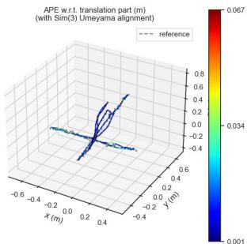
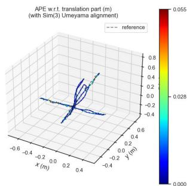
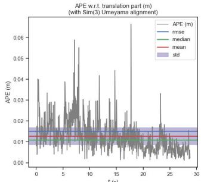
(a)
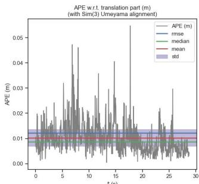
(b)
Fig. 7. Comparison of the trajectory from our proposed system with the advanced system’s trajectory against the ground truth in the w/xyz sequence. Sequence (a) is the result of SD-SLAM operation, and sequence (b) is the result of our proposed system.
TABLE V
COMPARISON OF COMPUTATION TIME IN TUM DATASET [ms]
| Modules | Times/ms | |||||
| 03 | RTD | RDS | OVD | COEB | Ours | |
| Tracking | 19.8 | 38.1 | 22.4 | 33.4 | 50.00 | 36.3 |
To rigorously prove that our proposed system is more effective than the latest visual SLAM system and has better camera pose recovery accuracy, we also conduct a set of trajectory experiments in the TUM’s walking/xyz high dynamic sequence and make comparison with SD-SLAM [25]. Fig. 7(a) shows the experimental results of SD-SLAM and Fig. 7(b) displays the results of our proposed SLAM system. The overall experiment’s absolute pose error RMSE is 0.015 and 0.012, respectively, consistent with the data in the previous table. The comparison charts show that the statistical data we collected on this sequence, including S.D., RMSE, mean, and median, are all lower than the experimental results of SD-SLAM. Moreover, the peak of our ATE is also lower than SD-SLAM’s ATE, indicating that our proposed system is more robust in the experimental environment than the latest dynamic SLAM systems. Additionally, we can see significant peak fluctuations in the ATE curve around 8 and 18 s. This may be due to the presence of two people in the image simultaneously in the dataset, and when the dynamic ratio occupies a major part, the number of features extracted in the remaining static area might be insufficient.
Additionally, as shown in Table V, we compared the average per-frame processing time of our system with the state-of-the-art SLAM systems on the TUM dataset. O3 refers to ORB-SLAM3, RTD refers to [24], RDS represents [23], OVD denotes [26] (referring to OVD-SLAM), and COEB refers to [27]. Although RDS has the highest processing speed, its performance in dynamic environments is far from comparable to our system. OVD, COEB, and our system all utilize Yolov5 and optical flow algorithms for dynamic object processing. OVD is faster than our system by 3 ms because it does not compute the fundamental matrix, but only calculates the optical flow vectors. However, OVD’s performance is not as good as ours in most sequences. Despite adding a module for feature line extraction, our system achieves the best balance between processing speed and accuracy. This also proves that our system can operate in real time.1
B. Experiments in Outdoor Environments
We benchmark our method against advanced outdoor techniques like PLDS-SLAM [28], SD-SLAM [25], Optical-SLAM [36], Dynamic SLAM [37], and DynaSLAM II [38], and report the RMSE of ATE across ten sequences for each system in Table VI. PLDS-SLAM, similar to ours, adapts ORB-SLAM3 for dynamic environments with point-line systems, and SD-SLAM utilizes dense object detection and optical flow for outlier detection. Optical-SLAM, like ours, utilizes optical flow for motion modeling, but it employs a geometric approach to acquire target bounding boxes. Dynamic SLAM employs semantic segmentation and scene flow to identify dynamic feature points. DynaSLAM II is an object visual SLAM that tracks moving objects using instance segmentation and jointly optimizes pose estimation. In the table, O3 denotes ORB-SLAM3 [1] as a baseline system, O3L adds line features to O3 without removing any dynamic point or line features. Our results are averaged from ten experiments, excluding outliers, while results for other methods follow their original reports.
Our approach improves trajectory estimation accuracy over ORB-SLAM3, with ATE that is 10%–15% lower across almost all sequences. Our system performs particularly well in the three static sequences (02, 07, 08) of rural areas, thanks to incorporating the point-line features, epipolar constraints, and LK optical flow consistency checks. Our method retains the point-line features of stationary vehicles, even in potential dynamic areas, and achieves robust performance on sequences 01, 03, and 04 captured in dynamic environments, underscoring its effectiveness.
In our experiments, we have eliminated features on moving car objects to remove their interference. As can be seen in Fig. 8, our system does not simply use a semantic algorithm to judge if each bounding box is in motion mechanically. Instead, it further utilizes bounding box-based optical flow epipolar constraints for judgment. Under various lighting conditions and traffic densities, our DPL-SLAM system can effectively identify moving objects in the environment. Our system can detect vehicles driving on the road and static vehicles parked on the sides of the road. As shown in the first row of Fig. 8(c), features that do not satisfy the constraints are considered dynamic. Feature points that fall on the body of the “Audi” car in motion are indicated by large solid pink circles, indicating that these point features are dynamic and have been discarded, not participating in tracking. Although we define all semantic classes in the scene as potentially dynamic, as shown in the second row of Fig. 8(c), feature points on static cars parked at the roadside are still retained. This adequately demonstrates that our system does not rely heavily on object detection algorithms but can effectively distinguish between dynamic and static features. It retains valid static features in the scene to the greatest extent and then performs effective tracking to recover an accurate camera pose. This is particularly important in complex traffic scenarios. Our system has strong generalization capabilities across different scenes and robustness in unfamiliar and complex environments.
(a)
TABLE VI
COMPARISON OF THE KITTI DATASET’S MEAN ATE BY USING OUR SYSTEM AND THE TOP VISUAL SLAM SYSTEMS
| Sequence | ATE/m | |||||||
| 03 | O3L | PLDS | SD | Optical | Dynamic | Dyna II | Ours | |
| 00 | 0.80 | 0.79 | 3.58 | 0.87 | 7.26 | 1.31 | 1.38 | 0.74 |
| 01 | 6.32 | 7.39 | 2.31 | 9.26 | 173.12 | 8.78 | 10.05 | 5.45 |
| 02 | 2.98 | 3.22 | 3.80 | 3.57 | 13.61 | 5.84 | 7.85 | 2.84 |
| 03 | 0.38 | 0.33 | 2.74 | 0.32 | 3.36 | 0.77 | 0.92 | 0.27 |
| 04 | 0.18 | 0.16 | 1.18 | 0.16 | 1.33 | 0.21 | 0.18 | 0.14 |
| 05 | 0.38 | 0.31 | 2.89 | 0.32 | 7.16 | 0.80 | 0.89 | 0.28 |
| 06 | 0.64 | 0.37 | 2.23 | 0.38 | 7.04 | 0.79 | 0.72 | 0.34 |
| 07 | 0.37 | 0.35 | 1.58 | 0.42 | 15.65 | 0.52 | 0.47 | 0.31 |
| 08 | 2.42 | 2.71 | 3.95 | 2.65 | 11.26 | 3.43 | 3.58 | 2.17 |
| 09 | 0.83 | 0.98 | 3.09 | 0.97 | 15.30 | 2.89 | 2.12 | 0.77 |
| 10 | 1.28 | 1.14 | 2.24 | 1.29 | 3.18 | 0.97 | 1.58 | 1.11 |
The best results are bolded, second-best underlined. For the existing SLAM systems, we utilize their original figures when available.

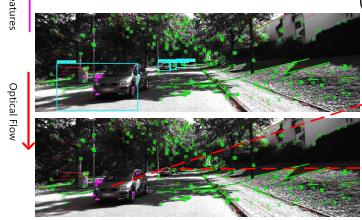
(b)
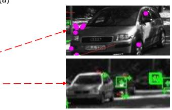
(c)
Fig. 8. Schematic of our method in the outdoor KITTI experiment. (a) Result of image processing by ORBSLAM3. (b) Result of image processing by our proposed system. (c) Magnified view of the details of the processing effect in (b).
C. Robustness Test in Real Environment
To evaluate our method in a real-world environment, we utilize an Intel D435i RGBD camera to record camera sequences, with ground truth provided by our system in the same but static environment with the same movement pattern. Doing so demonstrates our method’s effectiveness in handling real dynamic scenes and proves that our method can more effectively utilize geometric information in space. During the experiment, the camera is kept static and a person appears in front of the camera and exits, then rotates the stationary chair. Fig. 9 illustrates the results of the moving point elimination algorithm. Fig. 9(a) shows the original image information in the dynamic sequence, Fig. 9(b) shows the results after extracting the point lines and object features, and Fig. 9(c) shows the results after applying our moving object judgment algorithm.
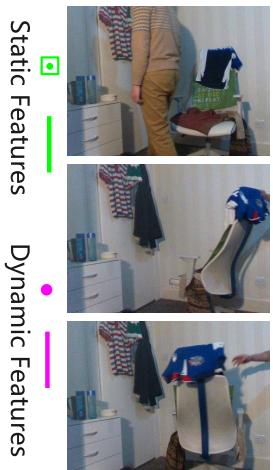
(a)
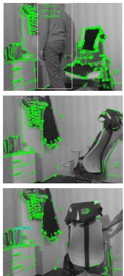
(b)
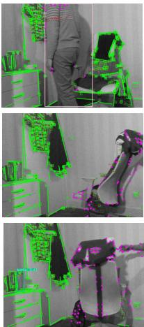
(c)
Fig. 9. Experiment in a real-life scene. Our method successfully detects dynamic points belonging to known objects (people) and limited unknown moving objects (Chair). (a) Represents the input RGB image, (b) represents the feature extraction process, and (c) represents the dynamic point detection process.
As shown in Fig. 9(b), when dynamic feature elimination does not function, the system will extract feature points from the moving human body and the rotating chair for matching, which introduces significant errors in the pose estimation between frames, leading to camera tracking failure. Fig. 9(c) demonstrates that our method can effectively eliminate feature points on the dynamic human body while preserving sufficient static features for pose recovery. When the chair rotates under the action of external forces, our algorithm can identify dynamic features in the scene, which are represented by solid pink circles in the image.
Additionally, we have qualitatively evaluated the performance of three algorithms in real-world scenarios. Fig. 10 shows the deviation from the ground of ORBSLAM3, ORBSLAM3 with line features, and our system in different directions (x, y, z axes). It can be seen from Fig. 10 that the original ORB-SLAM3’s pose estimation significantly deviates from the true value at around 23 s. This is when a person has just entered the camera’s field of view. At the same time, benefiting from the dynamic feature removal algorithm, our system’s pose estimation fluctuates very little. At 38 s, a chair is rotated due to an applied force. It is visible that around this time, the trajectory of ORB-SLAM3 is significantly disturbed by the moving object, with a noticeable increase in the offset in all three directions. However, our proposed system can handle these objects well and recover the accurate camera pose. In addition, by incorporating lines as part of the tracking in feature extraction, we can also improve the accuracy of camera pose recovery. Moreover, as shown in Fig. 11(c), the sparse point cloud map generated by the ORB-SLAM3 system cannot capture much effective information about the environment, while in our proposed DPL-SLAM system, the surrounding environment’s general outline can be constructed using both the texture and structural information. This can help machines better understand their surroundings to perform more advanced robotic tasks. Data from Fig. 10 indicates that ORB-SLAM3 is severely disturbed by dynamic objects in practical situations, with trajectory estimation deviating significantly. In contrast, our method aligns more closely with the ground-truth trajectory and has better stability. Moreover, the point-line map constructed by the system can effectively utilize the structural and texture information, facilitating the agent’s perception and understanding of the environment.
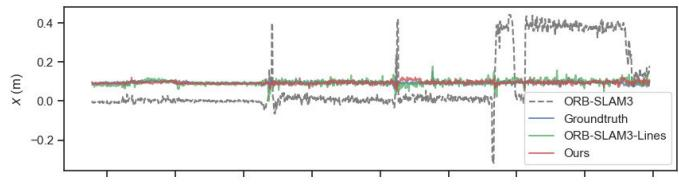
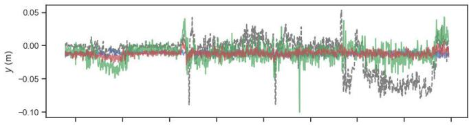
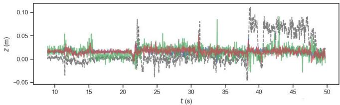
Fig. 10. Contrast of trajectories obtained from ORB-SLAM3, ORB-SLAM3-Lines, and our system in real environment.
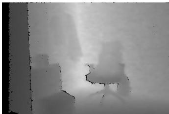
(a)
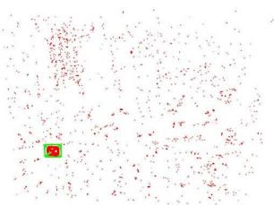
(c)
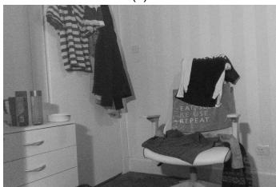
(b)
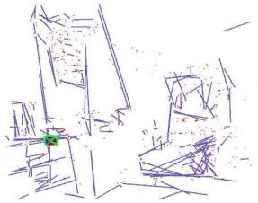
(d)
Fig. 11. (a) Depth map, (b) original image, (c) sparse point cloud reconstruction, and (d) point-line reconstruction in the experimental environment. The depth map is acquired by the motion capture system, the sparse point cloud is reconstructed by ORBSLAM3, and the sparse point-line map is reconstructed by our system.
V. CONCLUSION
We present a robust point-line SLAM system tailored for dynamic environments, proficient in handling known and unknown dynamic objects. Extensive evaluations demonstrate the superiority of our system in accuracy and real-time performance, notably due to the use of denser semantic objects. This showcases that our DPL-SLAM system can better help generate comprehensive, enduring semantic maps in dynamic contexts, thereby enabling complex robotic tasks [39], [40].
REFERENCES
[1] C. Campos, R. Elvira, J. J. G. Rodríguez, J. M. M. Montiel, and J. D. Tardós, “ORB-SLAM3: An accurate open-source library for visual, visual-inertial, and multimap SLAM,” IEEE Trans. Robot., vol. 37, no. 6, pp. 1874–1890, Dec. 2021.
[2] H. Zhang, D. Wang, and J. Huo, “A visual-inertial dynamic object tracking SLAM tightly coupled system,” IEEE Sensors J., vol. 23, no. 17, pp. 19905–19917, Sep. 2023.
[3] H. Lim, J. Jeon, and H. Myung, “UV-SLAM: Unconstrained line-based SLAM using vanishing points for structural mapping,” IEEE Robot. Autom. Lett., vol. 7, no. 2, pp. 1518–1525, Apr. 2022.
[4] J. Mo, M. J. Islam, and J. Sattar, “Fast direct stereo visual SLAM,” IEEE Robot. Autom. Lett., vol. 7, no. 2, pp. 778–785, Apr. 2022.
[5] C. Li, L. Yu, and S. Fei, “Real-time 3D motion tracking and reconstruction system using camera and IMU sensors,” IEEE Sensors J., vol. 19, no. 15, pp. 6460–6466, Aug. 2019.
[6] M. A. Fischler and R. Bolles, “Random sample consensus: A paradigm for model fitting with applications to image analysis and automated cartography,” Commun. ACM, vol. 24, no. 6, pp. 381–395, 1981.
[7] J. C. V. Soares, M. Gattass, and M. A. Meggiolaro, “Crowd-SLAM: Visual SLAM towards crowded environments using object detection,” J. Intell. Robot. Syst., vol. 102, no. 2, p. 50, Jun. 2021.
[8] V. Badrinarayanan, A. Kendall, and R. Cipolla, “SegNet: A deep convolutional encoder-decoder architecture for image segmentation,” IEEE Trans. Pattern Anal. Mach. Intell., vol. 39, no. 12, pp. 2481–2495, Dec. 2017.
[9] K. He, G. Gkioxari, P. Dollár, and R. Girshick, “Mask R-CNN,” in Proc. IEEE Int. Conf. Comput. Vis. (ICCV), Oct. 2017, pp. 2980–2988.
[10] R. G. von Gioi, J. Jakubowicz, J.-M. Morel, and G. Randall, “LSD: A fast line segment detector with a false detection control,” IEEE Trans. Pattern Anal. Mach. Intell., vol. 32, no. 4, pp. 722–732, Apr. 2010.
[11] Ultralytics. (2021). YOLOv5: A State-of-the-art Real-Time Object Detection System. [Online]. Available: https://docs.ultralytics.com
[12] B. D. Lucas and T. Kanade, “An iterative image registration technique with an application to stereo vision,” in Proc. Imag. Understand. Workshop, 1981, pp. 121–130.
[13] Y. Sun, M. Liu, and M. Q.-H. Meng, “Motion removal for reliable RGB-D SLAM in dynamic environments,” Robot. Auto. Syst., vol. 108, pp. 115–128, Oct. 2018.
[14] J. Cheng, Y. Sun, and M. Q.-H. Meng, “Improving monocular visual SLAM in dynamic environments: An optical-flow-based approach,” Adv. Robot., vol. 33, no. 12, pp. 576–589, Jun. 2019.
[15] W. Dai, Y. Zhang, P. Li, Z. Fang, and S. Scherer, “RGB-D SLAM in dynamic environments using point correlations,” IEEE Trans. Pattern Anal. Mach. Intell., vol. 44, no. 1, pp. 373–389, Jan. 2022.
[16] Z.-J. Du, S.-S. Huang, T.-J. Mu, Q. Zhao, R. R. Martin, and K. Xu, “Accurate dynamic SLAM using CRF-based long-term consistency,” IEEE Trans. Vis. Comput. Graphics, vol. 28, no. 4, pp. 1745–1757, Apr. 2022.
[17] D.-H. Kim, S.-B. Han, and J.-H. Kim, “Visual odometry algorithm using an RGB-D sensor and IMU in a highly dynamic environment,” in Robot Intelligence Technology and Applications 3, J.-H. Kim, W. Yang, J. Jo, P. Sincak, and H. Myung, Eds. Cham, Switzerland: Springer, 2015, pp. 11–26.
[18] H. Yin, S. Li, Y. Tao, J. Guo, and B. Huang, “Dynam-SLAM: An accurate, robust stereo visual-inertial SLAM method in dynamic environments,” IEEE Trans. Robot., vol. 39, no. 1, pp. 289–308, Feb. 2023.
[19] C. Yu et al., “DS-SLAM: A semantic visual SLAM towards dynamic environments,” in Proc. IEEE/RSJ Int. Conf. Intell. Robots Syst. (IROS), 2018, pp. 1168–1174.
[20] Y. Fan, Q. Zhang, Y. Tang, S. Liu, and H. Han, “Blitz-SLAM: A semantic SLAM in dynamic environments,” Pattern Recognit., vol. 121, Jan. 2022, Art. no. 108225.
[21] N. Dvornik, K. Shmelkov, J. Mairal, and C. Schmid, “BlitzNet: A realtime deep network for scene understanding,” in Proc. IEEE Int. Conf. Comput. Vis. (ICCV), Oct. 2017, pp. 4174–4182.
[22] Z. Hu, J. Zhao, Y. Luo, and J. Ou, “Semantic SLAM based on improved DeepLabv3? In dynamic scenarios,” IEEE Access, vol. 10, pp. 21160–21168, 2022.
[23] Y. Liu and J. Miura, “RDS-SLAM: Real-time dynamic SLAM using semantic segmentation methods,” IEEE Access, vol. 9, pp. 23772–23785, 2021.
[24] R. Gao, Z. Li, J. Li, B. Li, J. Zhang, and J. Liu, “Real-time SLAM based on dynamic feature point elimination in dynamic environment,” IEEE Access, vol. 11, pp. 113952–113964, 2023.
[25] Q. Zhang and C. Li, “Semantic SLAM for mobile robots in dynamic environments based on visual camera sensors,” Meas. Sci. Technol., vol. 34, no. 8, Aug. 2023, Art. no. 085202.
[26] J. He, M. Li, Y. Wang, and H. Wang, “OVD-SLAM: An online visual SLAM for dynamic environments,” IEEE Sensors J., vol. 23, no. 12, pp. 13210–13219, Jun. 2023.
[27] F. Min, Z. Wu, D. Li, G. Wang, and N. Liu, “COEB-SLAM: A robust VSLAM in dynamic environments combined object detection, epipolar geometry constraint, and blur filtering,” IEEE Sensors J., vol. 23, no. 21, pp. 26279–26291, Nov. 2023.
[28] C. Yuan, Y. Xu, and Q. Zhou, “PLDS-SLAM: Point and line features SLAM in dynamic environment,” Remote Sens., vol. 15, no. 7, p. 1893, 2023. [Online]. Available: https://www.mdpi.com/2072-4292/15/7/1893
[29] Y. Wang, K. Xu, Y. Tian, and X. Ding, “DRG-SLAM: A semantic RGB-D SLAM using geometric features for indoor dynamic scene,” in Proc. IEEE/RSJ Int. Conf. Intell. Robots Syst. (IROS), Oct. 2022, pp. 1352–1359.
[30] R. Gomez-Ojeda, F.-A. Moreno, D. Zuniga-Noel, D. Scaramuzza, and J. Gonzalez-Jimenez, “PL-SLAM: A stereo SLAM system through the combination of points and line segments,” IEEE Trans. Robot., vol. 35, no. 3, pp. 734–746, Jun. 2019.
[31] C. Harris and M. Stephens, “A combined corner and edge detector,” in Proc. Alvey Vis. Conf., vol. 15, 1988, pp. 147–151.
[32] J. Sturm, N. Engelhard, F. Endres, W. Burgard, and D. Cremers, “A benchmark for the evaluation of RGB-D SLAM systems,” in Proc. IEEE/RSJ Int. Conf. Intell. Robots Syst., Oct. 2012, pp. 573–580.
[33] A. Geiger, P. Lenz, C. Stiller, and R. Urtasun, “Vision meets robotics: The KITTI dataset,” Int. J. Robot. Res., vol. 32, no. 11, pp. 1231–1237, Sep. 2013.
[34] Y. Li, R. Yunus, N. Brasch, N. Navab, and F. Tombari, “RGB-D SLAM with structural regularities,” in Proc. IEEE Int. Conf. Robot. Autom. (ICRA), May 2021, pp. 11581–11587.
[35] M. C. Potter and E. I. Levy, “Recognition memory for a rapid sequence of pictures.,” J. Experim. Psychol., vol. 81, no. 1, pp. 10–15, 1969.
[36] Y. Liu and Z. Zhou, “Optical flow-based stereo visual odometry with dynamic object detection,” IEEE Trans. Computat. Social Syst., vol. 10, no. 6, pp. 3556–3568, Dec. 2023.
[37] S. Wen et al., “Dynamic SLAM: A visual SLAM in outdoor dynamic scenes,” IEEE Trans. Instrum. Meas., vol. 72, pp. 1–11, 2023.
[38] B. Bescos, C. Campos, J. D. Tardos, and J. Neira, “DynaSLAM II: Tightly-coupled multi-object tracking and SLAM,” IEEE Robot. Autom. Lett., vol. 6, no. 3, pp. 5191–5198, Jul. 2021.
[39] C. Li et al., “Fast forest fire detection and segmentation application for UAV-assisted mobile edge computing system,” IEEE Internet Things J., early access, Sep. 4, 2024, doi: 10.1109/JIOT.2023.3311950.
[40] B. Fang, G. Mei, X. Yuan, L. Wang, Z. Wang, and J. Wang, “Visual SLAM for robot navigation in healthcare facility,” Pattern Recognit., vol. 113, May 2021, Art. no. 107822. [Online]. Available: https://www.sciencedirect.com/science/article/pii/S0031320321000091
Zhihao Lin received the B.S. degree from Liaocheng University, Liaocheng, China, in 2018, and the M.S. degree from the College of Electronic Science and Engineering, Jilin Univerisity, Jilin, China. He is currently pursuing the Ph.D. degree with the College of Science and Engineering, University of Glasgow, Glasgow, U.K.
His main research interests focus on multisensor fusion SLAM systems and robot perception in complex scenarios.
Qi Zhang received the B.S. degree from the North University of China, Taiyuan, China, in 2022, and the M.Sc. degree from the School of Computing Science, University of Glasgow, Glasgow, Scotland, U.K.
His current research interests include algorithms and systems for semantic SLAM in dynamic environments.
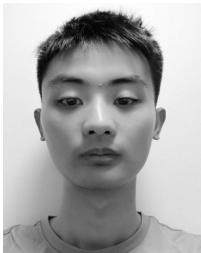
Zhen Tian received the bachelor’s degree in electronic and electrical engineering from the University of Strathclyde, Glasgow, U.K., in 2020. He is currently pursuing the Ph.D. degree with the College of Science and Engineering, University of Glasgow, Glasgow.
His main research interests include interactive vehicle decision systems and autonomous racing decision systems.
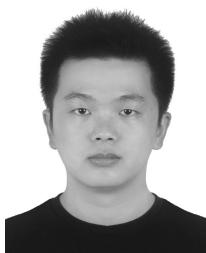
Peizhuo Yu received the B.Eng. degree from Beijing University of Chemical Technology, Beijing, China, 2017. He is currently pursuing the Ph.D. degree with the School of Engineering, University of Glasgow, Glasgow, U.K.
His research interests lie in planning and control for mobile robots.
Jianglin Lan received the Ph.D. degree from the University of Hull, Hull, U.K., in 2017.
From 2017 to 2022, he held Postdoctoral positions at the Imperial College London, Loughborough University, Loughborough, U.K.; and the University of Sheffield, Sheffield, U.K. He was a Visiting Professor at the Robotics Institute, Carnegie Mellon University, Pittsburgh, PA, USA, in 2023. He has been a Leverhulme Early Career Fellow and a Lecturer at the University of Glasgow, Glasgow, U.K., since 2022.
His research interests include AI, optimization, control theory, and autonomy.
md/2024_DPL-SLAM__Enhancing_Dynamic_Point-Line_SLAM_Through_Dens.md 预渲染生成（OCR 语料，插图取自原文）。
公式以 MathML 呈现，浏览器原生渲染，不依赖外部脚本或字体 CDN。